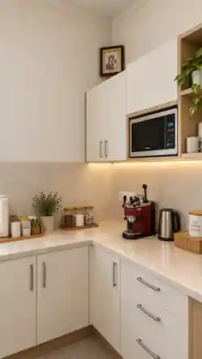
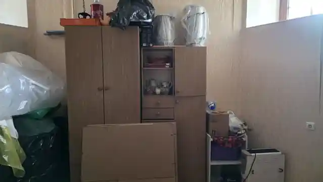
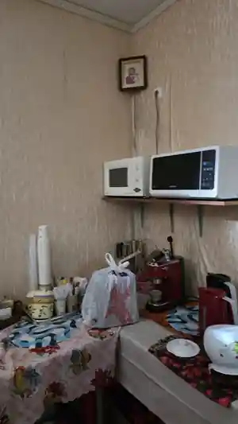
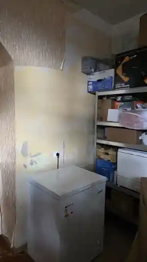
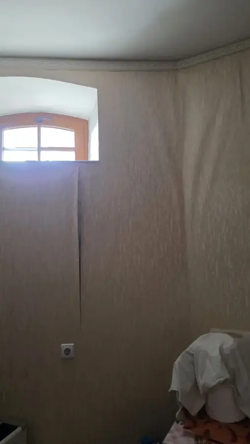
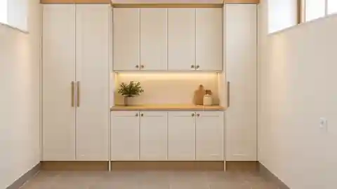

Parapijos projektas · 2026
Bukiškių parapijos virtuvės atnaujinimas
Maža erdvė, svarbi parapijos gyvenimui
Norime atnaujinti parapijos virtuvę ir sukurti šviesią, tvarkingą bei praktišką erdvę, kuri daugelį metų tarnautų bendruomenei.

Ne tik virtuvė
Kasdienė parapijos gyvenimo vieta
Parapijos virtuvė – nedidelė, tačiau svarbi bendruomenės gyvenimo dalis. Čia ruošiama arbata ir kava, vaišės po pamaldų, pasiruošiama parapijos šventėms, susitikimams ir kitiems renginiams.
Mūsų tikslas
Tvarkinga, šviesi ir ilgaamžė erdvė
Mūsų tikslas nėra prabangi virtuvė. Norime sukurti švarią, šviesią, patvarią ir funkcionalią erdvę, kurioje kiekvienas daiktas turėtų savo vietą.
Dabartinė būklė
Ką turime šiandien
Patalpa naudojama nuolat, tačiau esami baldai, atviras laikymas, nusidėvėjusios sienos ir nepatogiai išdėstyta technika apsunkina tvarką bei kasdienį darbą.




Darbai etapais
Aiški ir atsakinga darbų eiga
Projektą įgyvendinsime nuosekliai: pirmiausia sutvarkysime pačią patalpą, o tuomet įrengsime naują, praktišką virtuvės zoną.
1 etapas
Galime pradėti
Patalpos paruošimas
Jau surinkta 1 500 €. Šios lėšos leidžia pradėti pirmąjį atnaujinimo etapą – ištuštinti patalpą, sutvarkyti sienas, paruošti paviršius, atlikti glaistymo ir dažymo darbus.
- Pašalinti senus baldus, atviras lentynas ir laikinas konstrukcijas
- Pašalinti pažeistas ir nebetinkamas dangas
- Sutvarkyti sienų defektus, glaistyti ir paruošti paviršius
- Išlyginti reikiamas vietas ir nudažyti sienas
- Paruošti patalpą naujų baldų montavimui
2 etapas
Toliau – įrengimas
Virtuvės įrengimas
Antrajame etape planuojama įrengti šviesią, tvarkingą ir praktišką virtuvę su daug uždaro laikymo ir aiškiai organizuota darbo zona.
- Nauji apatiniai, viršutiniai ir aukšti laikymo baldai
- Uždaras indų, produktų ir inventoriaus laikymas
- Naujas stalviršis ir patogi darbo vieta
- Numatytos vietos mikrobangų krosnelei, kavos aparatui ir virduliui
- Tvarkinga arbatos ir kavos zona bei paslėptos buitinės priemonės
Dabar → tikslas
Aiškiai matoma atsinaujinimo kryptis
Vizualizacija parodo planuojamą erdvės kryptį. Galutinis baldų išdėstymas ir detalės gali būti koreguojami pagal patalpos matavimus ir techninius sprendimus.

Biudžetas
Visa projekto suma ir dabartinė pažanga
Tai vienas bendras virtuvės atnaujinimo projektas. Jau surinktos lėšos leidžia pradėti darbus, o likusi suma reikalinga projektui užbaigti.
Surinkta 24,2 %
1 500 € / 6 200 €
Bendra suma yra orientacinė ir gali būti tikslinama pagal galutinius matavimus, pasirinktus baldus bei techninius sprendimus.
Prisidėti prie projekto
Padėkite surinkti likusius 4 700 €.
Jau surinkta 1 500 €. Galima paaukoti bet kokią sumą — kiekvienas įnašas priartina projektą prie įgyvendinimo.
Po darbų parapija galės pateikti galutines nuotraukas ir faktines išlaidas.
Bukiškio stačiatikių Kristaus Gimimo parapija
LT40 7044 0600 0624 4432
Bankas
AB SEB bankas
BIC / SWIFT
CBVILT2X
Įmonės kodas
301004570
Paskirtis
Auka parapijos virtuvės atnaujinimui
Prieš patvirtindami pavedimą patikrinkite gavėją ir IBAN.